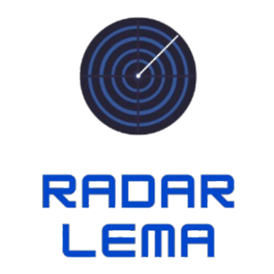
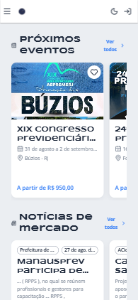
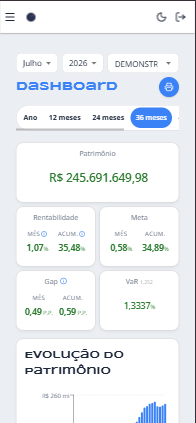
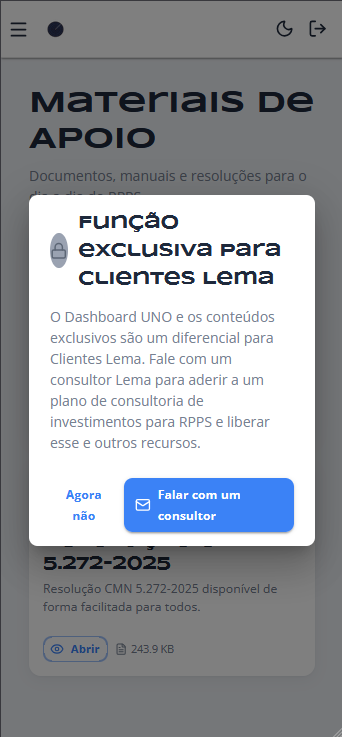

Proposta de produto · Ecossistema Lema
Radar
Lema
De agenda de eventos a hub da Lema para RPPS — e a um novo canal de captação de clientes.

radarlema.app · agosto 2026 · versão resumidaO problema
A informação existe.
O relacionamento, não.
Para o cliente
O dirigente de RPPS precisa de seis lugares para se manter atualizado — resolução no Gov.br, notícia num portal, material num e-mail antigo, evento num grupo de WhatsApp — e não tem tempo para nenhum.
Para a Lema
O relacionamento acontece em picos: comitê, evento, renovação. Entre um e outro, a Lema some do dia a dia do cliente — e da conversa de quem ainda não é cliente.
Um hub, seis frentes
EM PRODUÇÃOEventos
Agenda do setor com filtros, sessões, recorrência e lembrete no celular.
Notícias
Oito fontes do setor agregadas de hora em hora, classificadas por tema.
Artigos
Análises da Lema, sincronizadas do blog três vezes por dia.
Materiais
Manuais e resoluções em biblioteca privada, com prévia de PDF no app.
Novidades UNO
Atualização, manutenção ou instabilidade do sistema — avisada por push.
Dashboard UNO
Carteira do RPPS em tempo real. Exclusivo de Cliente Lema.
O time da Lema faz curadoria. Não faz digitação — a ingestão é automática.
Tudo que importa,
numa tela
TELA INICIAL · PWA MOBILE

Quatro seções carregadas em paralelo. O cliente encontra o que precisa antes de decidir o que estava procurando.
- →Instala como app na tela inicial, sem loja
- →Notificação por push, com o app fechado
- →Curtida e comentário em todo conteúdo
O diferencial:
Dashboard UNO
EXCLUSIVO · CLIENTE LEMA

A carteira do RPPS, ao vivo, no bolso — dentro do mesmo app do conteúdo, com relatório em PDF pronto para a reunião do comitê.
- →Patrimônio, rentabilidade, meta, gap e VaR
- →Dados do próprio sistema UNO, não uma cópia
- →Um RPPS não enxerga a carteira de outro — regra no banco
Cada cadeado
é um lead
CAPTAÇÃO DE LEADS

Quem não é Cliente Lema vê o título — e esbarra no cadeado.
- 01O conteúdo público atrai o RPPS não-cliente, sem esforço comercial
- 02O clique num material exclusivo qualifica: interesse no assunto específico
- 03O cadeado já abre com "Falar com um consultor" — falta registrar o lead
O caminho está construído. Falta ligar a outra ponta: o funil comercial.
Não é protótipo.
Está em produção.
09/07/2026 → 27/08/2026
Como foi construído
Sete semanas, uma pessoa, 84 entregas — inteiramente em vibe code (desenvolvimento assistido por IA), sem equipe alocada e sem orçamento de projeto.
Suíte de testes automatizada, 12 ADRs, banco 100% versionado.
Custo de manutenção
R$ 0 /mês
Vercel, Supabase e PostHog, todos dentro do plano gratuito.
Como produto oficial, a licença comercial da Vercel custa US$ 20/mês — ou nada, na infraestrutura que a Lema já tem.
A meta
Tornar o Radar
um produto
da Lema.
Pedido
O aval para o Radar deixar de ser iniciativa individual e virar produto — marketing, comercial e tecnologia juntos.
Conteúdo
O time alimentando artigos e materiais — a máquina de ingestão já está pronta.
Comercial
Registrar e distribuir os leads do cadeado, em vez de um e-mail enviado à mão.
Próximos passos já mapeados: Comunidade Lema no WhatsApp e lembrete por e-mail.